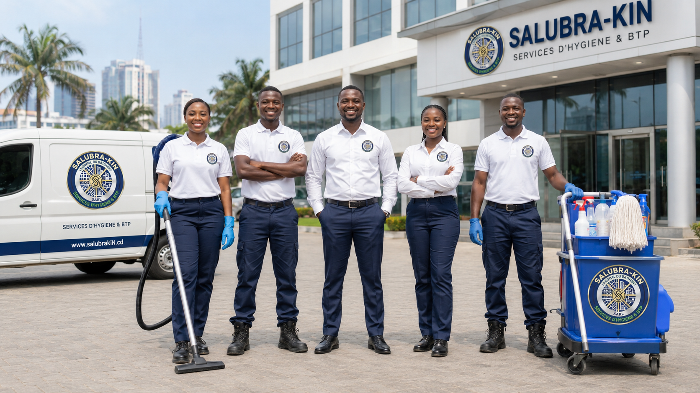
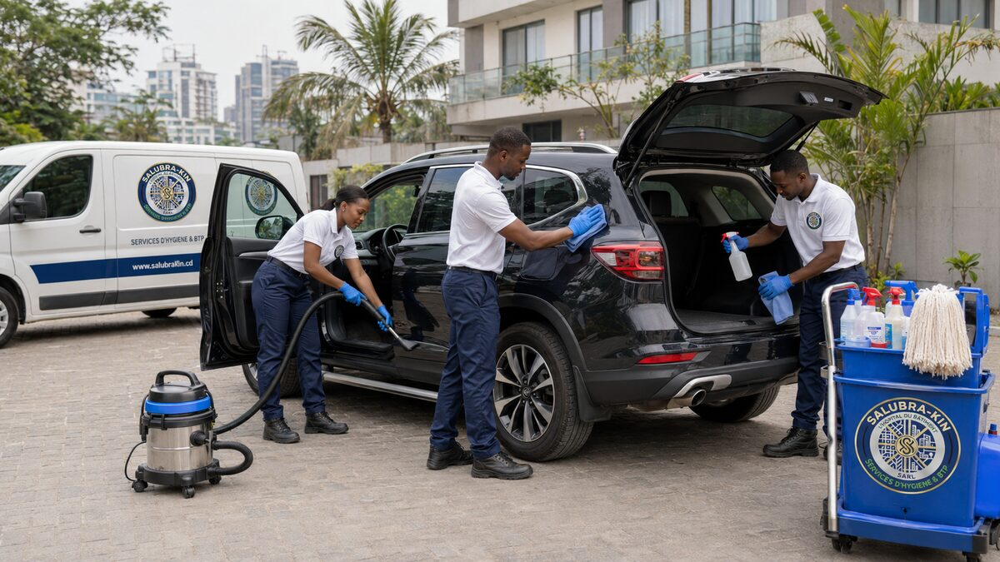
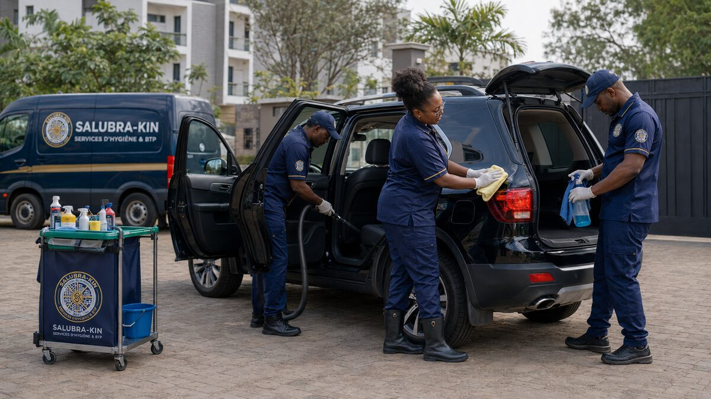
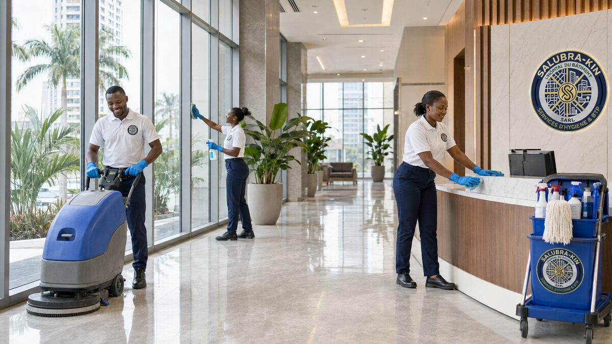
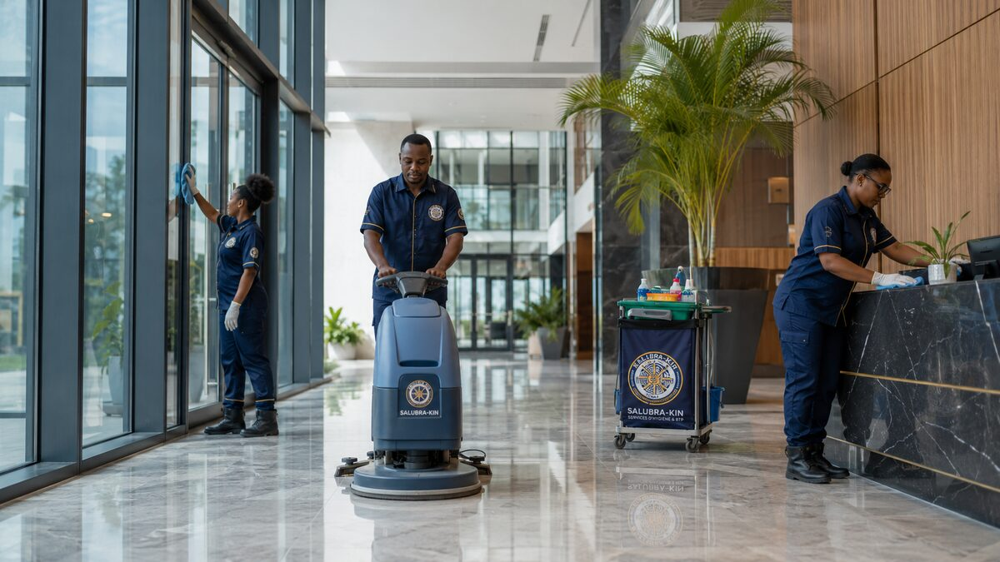
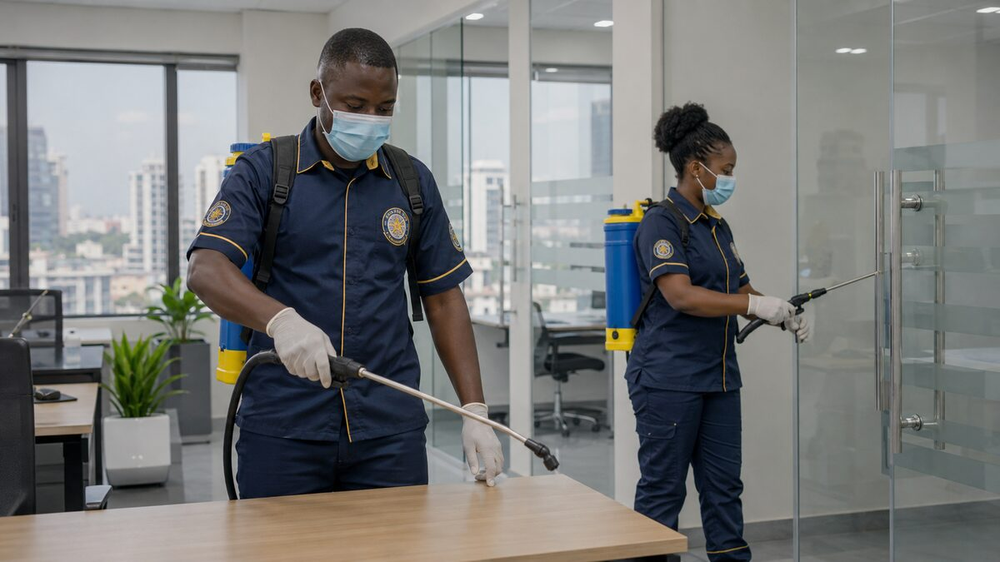
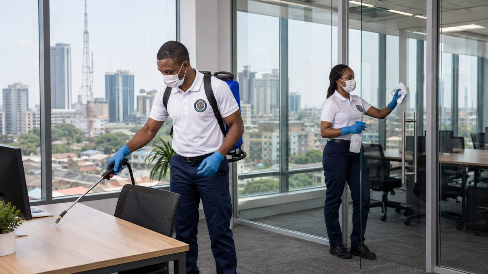
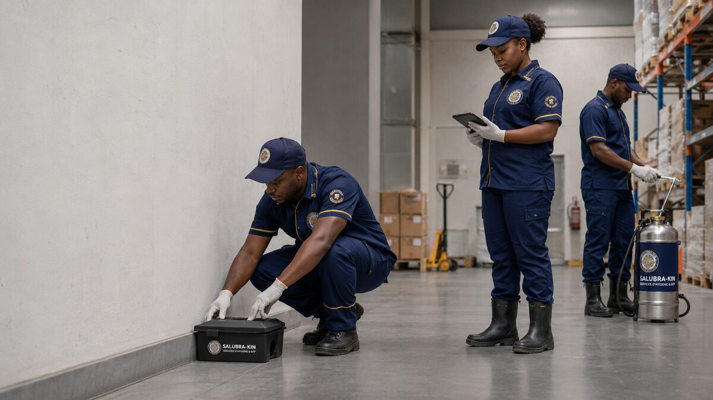
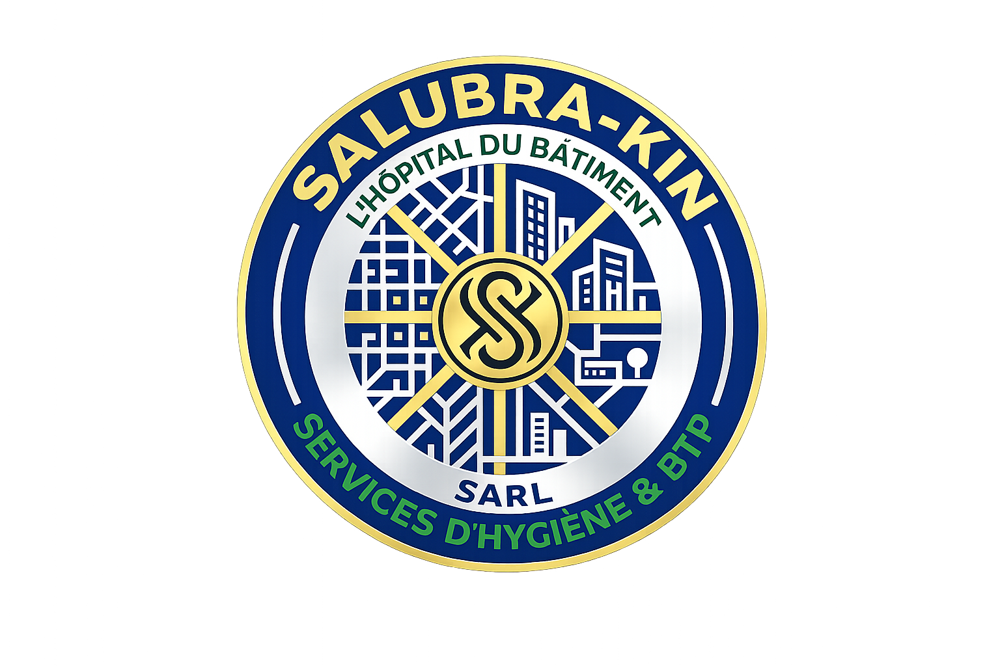
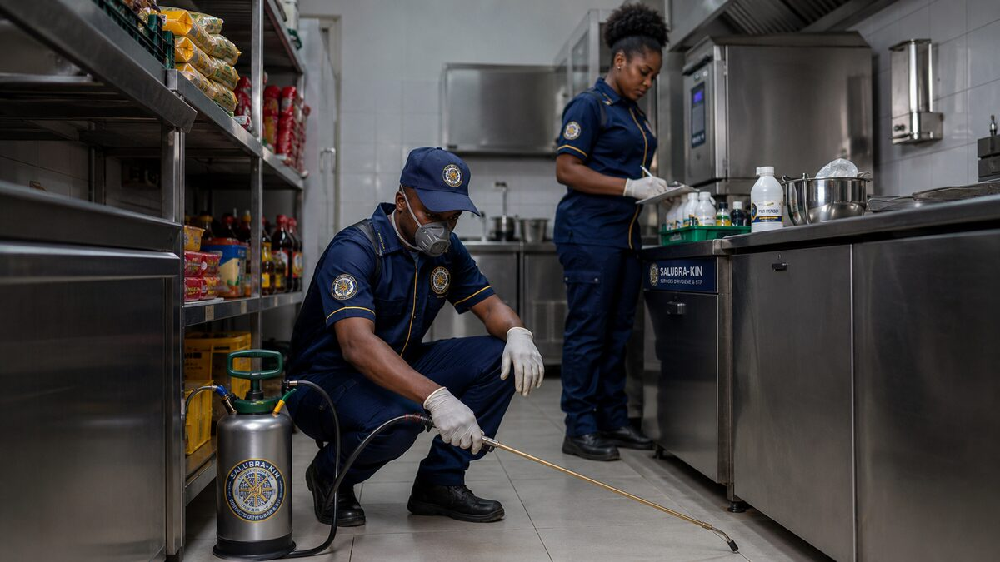

Nous ne nettoyons pas — nous détectons, traitons, contrôlons et certifions. Service mobile d'hygiène professionnelle pour vos véhicules et bâtiments à Kinshasa.
Kinshasa est une métropole de 17 millions d'habitants. Les entreprises se formalisent, les hôtels s'implantent, les institutions se renforcent. Pourtant, personne ne détectait, ne mesurait, ne documentait et ne certifiait l'hygiène réelle des espaces où les Kinshasois vivent, travaillent et se déplacent. SALUBRA-KIN est né pour combler ce vide.
Hygiène véhiculaire complète — on-site, chez vous
Désinfection et assainissement des bâtiments
Assainissement tridimensionnel profond

Chaque intervention se termine par un certificat sanitaire officiel avec QR code — une traçabilité unique au Congo.


SALUBRA-KIN intervient directement sur votre parking, résidence, bureau, hôtel ou église. Le client ne se déplace pas — nous venons à lui avec tout l'équipement nécessaire.
Réserver une intervention →

Le nettoyage classique entretient la surface. SALUBRA-KIN assainit la profondeur. La combinaison lavage + désinfection 3D + certification transforme chaque intervention en acte documentable et vérifiable.
Demander un audit →

Le DEEP 3D traite ce que l'œil ne voit pas — et ce qui est souvent plus dangereux que ce que l'on voit. Idéal pour les environnements à haut risque sanitaire : industries, entrepôts, cuisines professionnelles, laboratoires.
Demander un devis DEEP 3D →Un protocole rigoureux inspiré des standards médicaux — appliqué systématiquement à chaque intervention.

Notre équipe intervient avec un kit de détection scientifique unique au Congo : luminomètre ATP (bactéries), lampe UV 365nm (moisissures invisibles), détecteur VOC (composés chimiques), caméra thermique (humidité cachée), endoscope flexible (conduits), hygromètre CO2 (qualité de l'air).
Attribution d'un score sur 100 points selon notre échelle officielle : ROUGE (risque sanitaire) → ORANGE (hygiène faible) → JAUNE (état moyen) → VERT (bon niveau) → CERTIFIÉ (norme SALUBRA-KIN). Ce score documente l'état initial et définit les objectifs de traitement.
Application du protocole adapté au diagnostic : désinfection, nébulisation, fumigation, vapeur haute température ou assainissement DEEP 3D. Produits homologués OMS, techniciens certifiés, code couleur microfibres respecté (bleu carrosserie, rouge jantes, jaune intérieur, vert vitres).
Nouveau passage au kit de détection après traitement. Comparaison des scores avant/après avec photos documentées de chaque zone. Si les objectifs ne sont pas atteints, retraitement gratuit jusqu'à conformité — c'est notre garantie.
Délivrance du certificat sanitaire SALUBRA-KIN avec score final, date de validité et QR code de vérification. Pour les véhicules : passeport autocollant permanent apposé sur le pare-brise. Badge numérique disponible pour vos communications.

Recommandation de la prochaine visite selon l'usage et l'environnement. Contrats d'entretien régulier disponibles pour les entreprises. Historique complet accessible via QR code — traçabilité totale dans le temps.
SALUBRA-KIN est le seul opérateur en RDC à combiner détection scientifique, traitement certifié et documentation complète.
6 instruments de mesure : Luminomètre ATP, Lampe UV 365nm, Détecteur VOC, Caméra thermique, Endoscope flexible, Hygromètre CO2
Échelle exclusive ROUGE → ORANGE → JAUNE → VERT → CERTIFIÉ — une mesure chiffrée et documentée de l'hygiène de chaque espace
Bleu (carrosserie) · Rouge (jantes) · Jaune (intérieur) · Vert (vitres) · Blanc (finition) — aucune contamination croisée possible
QR code sur chaque véhicule et bâtiment traité — accès à l'historique complet des interventions, scores et certifications
Aspiration HEPA (99,97% particules) · Vapeur haute T° · Ozone · Autolaveuse sol · Perche 6m vitres · Pulvérisateur électrostatique
Rapport PDF avec photos avant/après, score initial et final, zones traitées, produits utilisés — unique au marché congolais
Particuliers, entreprises, institutions — SALUBRA-KIN adapte ses protocoles à chaque environnement.
Chaque chambre est occupée par un inconnu différent chaque nuit. Le traitement 3D coupe la chaîne de contamination entre clients successifs.
BUILDING-CARE + DEEP 3DLes bactéries résistantes survivent des heures sur les surfaces médicales. Le DEEP 3D est ici une obligation morale et sanitaire.
DEEP 3D obligatoireMoins de maladies = moins d'absentéisme. Le traitement des open spaces, salles de réunion et zones communes est un argument RH direct.
BUILDING-CARETaxis, véhicules de service, flottes d'entreprise — intervention régulière avec certification pour chaque véhicule de votre flotte.
CAR-CARE contrat50 enfants dans une salle représentent 50 sources de contamination croisée. Les parents choisissent une école propre — le 3D devient argument de recrutement.
BUILDING-CARE + 3DDes milliers de personnes chaque semaine dans le même espace. SALUBRA-KIN offre une inspection gratuite et un traitement avec prise de parole devant l'assemblée.
BUILDING-CARE + 3DEntrepôts, cuisines industrielles, zones de production — dératisation, désinsectisation et assainissement profond avec documentation complète.
DEEP 3D industrielUn matelas moyen contient 2 millions d'acariens. La climatisation non traitée diffuse des moisissures la nuit. Votre maison mérite une hygiène certifiée.
CAR-CARE + BUILDINGTransparence totale — chaque intervention inclut le diagnostic, le traitement et le certificat sanitaire.
Hygiène véhiculaire — intervention sur site
Contrats mensuels — bâtiments & espaces
Pionnier de l'hygiène professionnelle certifiée en RDC — expertise unique, protocoles éprouvés.
Standards hospitaliers appliqués à chaque intervention — rigueur, traçabilité, documentation complète.
Certificat avec QR code vérifiable remis après chaque intervention — valeur ajoutée pour votre image.
Nous venons à vous — parking, résidence, bureau, hôtel, usine. Aucune contrainte logistique.
Formulations biodégradables, sans danger pour occupants et environnement — sécurité garantie.
Interlocuteur dédié, historique d'interventions, recommandations de prochaine visite — relation de confiance durable.

Diagnostic gratuit sur place · Devis personnalisé · Réponse sous 24h.
Kinshasa et périphérie — République Démocratique du Congo
Sous 24h pour toute demande de diagnostic ou d'intervention
Premier audit sanitaire offert — sans engagement, avec rapport écrit
Certificat sanitaire officiel avec QR code remis après chaque intervention